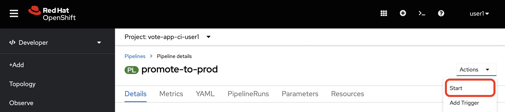
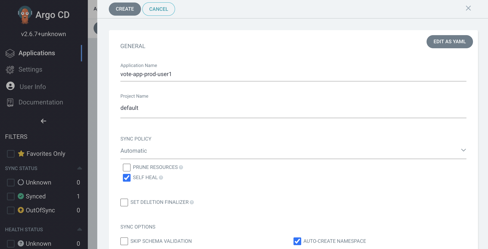
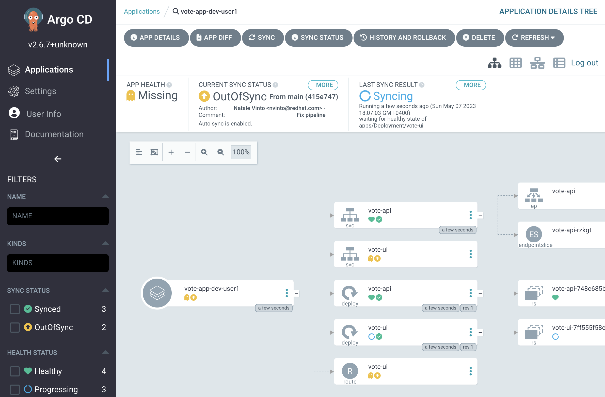
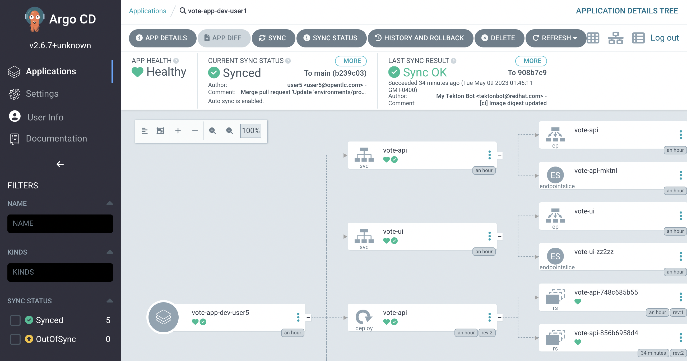

Vote App Lab Production - Pushing to Production Now, it’s time to push our application to production. We’ll be using one last pipeline, promote-to-prod, to tag our image, push it to the vote-app-prod-%USERID% environment, then update the repository with this new image digest. Then, we’ll use Argo CD to create a new prod application with self-healing enabled. Finally, we’ll use Git to modify the application, scaling up the deployment replicas and viewing this high-availability in real-time from the OpenShift Web Console. Viewing the promote-to-prod pipeline Firstly, ensure that you’re currently using the vote-app-ci-%USERID% project. This is where our pipeline manifests have been created, and where we’ll be running the pipeline from. Within this Pipelines dashboard, you will see a list of pipelines. Click on the promote-to-prod pipeline to see the details of the pipeline. Here, you can go through the pipeline steps and see what each step is doing. You can also see the pipeline resources that are being used. In addition, you can see the pipeline parameters that are being used. These parameters are used to pass in the name of the image that will be built, and the name of the image that will be pushed to the registry. For reference, here’s the pipeline steps: tag-to-prod: This step tags the image from the dev project and pushes it to the prod project. image-tag-to-digest: This step tags the image with the digest of the image that was pushed to the prod project. git-update-deployment: This step updates the vote-app-gitops repository with the new image digest. Running the promote-to-prod pipeline Here, we can go ahead and start the Pipeline. Click on the top-right Actions then Start button to start the pipeline. The steps are the same as the previous pipelines, so we won’t go through them again.  You will be prompted to enter the values for the pipeline parameters, however the default values are already set for you. You’ll need to specify a Empty Directory for the app-source parameter. This is because we’re not building the application from source, we’re using the image that was built in the dev project. Click on the Start button to start the pipeline. Now that the promote-to-prod pipeline has been started, let’s go ahead and check the status of the pipeline. Once the pipeline has completed, you’ll notice that the vote-app-gitops repo has been updated with a new hash of an image. This is the image that was built in the dev project, and pushed to the prod project, and referenced in the environments/prod/kustomization.yaml file that can be found here. Deploying the application to production using Argo CD Within the Argo CD dashboard, click on the + New App button. Fill in the following information, many of which may auto-fill when selected: Application Name: vote-app-prod-%USERID% Project: default Sync Policy: Automatic Self-Healing: Enabled Auto-create Namespace: Enabled Repository URL: http://gitea.gitea.svc:3000/%USERID%/vote-app-gitops Revision: main Path: environments/prod Cluster URL: https://kubernetes.default.svc Namespace: vote-app-prod-%USERID%  Click on the Create button to create the application. You will be taken to the application details page. Here, you can see the application’s health, sync status, and associated resources. Currently, the application is syncing, so the status is OutOfSync. Once the application is synced, the status will change to a green Synced. Reviewing SyncWaves in Argo CD Argo CD has a feature called Syncwaves, which allows you to deploy applications in a staggered fashion. This is useful when you have multiple applications that are dependent on each other, and you want to deploy them in a specific order. For example, you may have a database application that you want to deploy first, then your application that depends on the database. You can use SyncWaves to deploy the database application first, then the application that depends on the database. In our case, let’s see SyncWaves in action. Let’s visit the vote-app-gitops production kustomization.yaml file here. apiVersion: kustomize.config.k8s.io/v1beta1 kind: Kustomization bases: - ../../k8s/ patchesJson6902: (1) - patch: |- - op: add path: /metadata/annotations value: argocd.argoproj.io/sync-wave: "0" (2) target: (3) group: apps kind: Deployment name: vote-api version: v1 - patch: |- - op: add path: /metadata/annotations value: argocd.argoproj.io/sync-wave: "1" target: kind: Service name: vote-api version: v1 - patch: |- - op: add path: /metadata/annotations value: argocd.argoproj.io/sync-wave: "2" target: group: apps kind: Deployment name: vote-ui version: v1 - patch: |- - op: add path: /metadata/annotations value: argocd.argoproj.io/sync-wave: "3" target: kind: Service name: vote-ui version: v1 - patch: |- - op: add path: /metadata/annotations value: argocd.argoproj.io/sync-wave: "4" target: kind: Route name: vote-ui version: v1 1 Here we are using Kustomize to add SyncWaves as annotations to the Kubernetes manifests for production 2 The SyncWaves cardinality defines the order of deployment, in this case we want to deploy first the backend and then the frontend 3 With Kustomize we can define which manifest to match for the patch, in this case Deployments, Services and Routes. With our configuration currently, SyncWaves allow for a controlled rollout of resources by setting a sequence in which they should be deployed. In this case, we have multiple resources, vote-api and vote-ui. The vote-api resources have syncwaves of 0 and 1, whereas the vote-ui resources have a syncwave of 2, 3 and 4. This means that the vote-api resource will be deployed first, then the vote-ui resource will be deployed second.  Viewing the application and detecting drift Now that the application has been deployed to production, let’s go ahead and view the application in the OpenShift console. Click on the Developer perspective, then click on the Topology view. Ensure you’re in the vote-app-prod-%USERID% application, and you should see the application deployed. Click on the vote-ui deployment, and click Details to see the details of the deployment. Here, you see how Argo CD will auto-detect drift in the application. Let’s go ahead and change the number of replicas to 2, and see how Argo CD detects the drift and auto-heals. Almost immediately after scaling up the replicas for the vote-ui deployment, Argo CD notices this drift, and auto-corrects us back to 1 replicas. Pretty neat! Using Git to modify the application Now, let’s go ahead and make a change to the application. We’ll change the number of replicas to 2, and see how Argo CD detects the drift and auto-heals. To do this, let’s go ahead and modify the environments/prod/kustomization.yaml file in the vote-app-gitops repository. You can do this by clicking on the Code tab, then clicking on the environments/prod/kustomization.yaml file here, then clicking on the Edit button. Change the number of replicas on line 4 to 2, then navigate to the Commit changes section at the bottom of the page. Here, we can select Create a new branch for this commit and start a pull request. We will create a new branch, %USERID%-feature-id and start a pull request to merge the changes into the main branch. Click on the Propose file change button to create the pull request. You will be taken to the New Pull Request page. Here, you can see the changes that were made to the file. Click on the New Pull Request button to create the pull request. Now, you’ll see a new page to create a pull request. Here, you can see the details of the pull request. Click on the Create pull request button to create the pull request. With the new pull request created, let’s go ahead and merge the pull request. Click on the Create merge commit button to merge the pull request. Viewing the application and detecting drift Now, let’s go ahead and check the status of the application in the OpenShift console. Click on the Developer perspective, then click on the Topology view. Ensure you’re in the vote-app-prod-%USERID% application, and you should see the vote-ui deployed, now with 2 replicas. Click on the vote-ui deployment, and click Details to see the details of the deployment. Here, you see how Argo CD will auto-detect drift in the application. Let’s go ahead and change the number of replicas to 1, and see how Argo CD detects the drift and auto-heals. Automatically, the application will sync, Argo CD uses the manifests in the vote-app-gitops repository to detect these drifts and keep us at 2 replicas. We can also see this in Argo CD, where auto sync is enabled.  Conclusion In this section, we learned how to use Tekton GitOps to deploy an application from a development to a production environment, and how to use Argo CD to detect drift in the application and auto-heal the application. Finish Finish